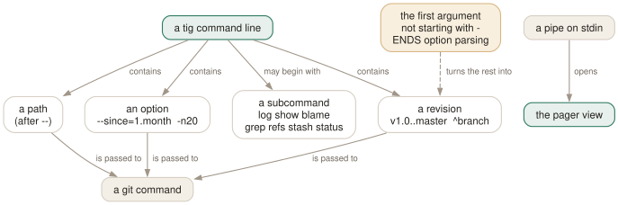

Day 10
The command line
Revision specification, path limiting, and tig as a pager.
By the end of today you can
- limit what tig loads by revision, by path, by date and by count — and combine them
- pipe the output of any git command into tig and get it coloured and navigable
- recognise the argument-parsing trap that makes tig say "no revisions match"
Everything you say before tig starts
tig's command line is mostly git's command line. It recognises a handful of subcommands and three of its own options, sorts the rest into revisions and paths, and passes everything through. That means every git log option you already know works, and the ones you do not know are worth learning once for both tools.
The subcommands each start you in a particular view:
tig main view (the default)
tig log log view — full messages and diffstats
tig show <rev> diff view
tig blame <file> blame view
tig grep <pattern> grep view
tig refs refs view tig stash stash view
tig status status view tig reflog reflog view
Plus three options that belong to tig rather than git: -C <path> to run as if started elsewhere, +<number> to open with a particular line selected, and -v for the version.

Limiting by revision
The single most useful thing on this page is the range. tig a..b means “reachable from b but not from a”:
tig v1.0..master what master has that v1.0 does not
tig origin/master..HEAD what you are about to push
tig origin.. the same — a missing end means HEAD
tig master ^v1.0 identical to the first line, written as a negation
tig master ^v1.0 ^v1.1 negation repeats; prune several starting points
tig --all every ref, as if all of refs/ were listed
The second line is the one to make a habit of. Reviewing your own commits before you push them catches the debugging print you left in, and it is one alias away: alias tigp='tig @{upstream}..HEAD'.
Limiting by path, date and count
tig -- src/parser.c only commits touching that path
tig -- src/ doc/ several paths
tig --since=1.month by date
tig --after=2026-01-01 --before=2026-03-01
tig --after=May.5th dots avoid having to quote spaces
tig -n20 at most twenty commits
tig --since=1.month -n20 -- doc/ all three at once
Remember from Day 2 that a path limit also removes the working-tree rows from the top of the main view, and from Day 4 that it silently filters the diff view until you press %. Both follow from the same decision and both surprise people.
The argument-parsing trap
This one costs everybody twenty minutes exactly once. tig stops parsing options at the first argument that does not begin with -, and treats it as a revision or a path. So an option whose value is a separate word breaks:
$ tig -S return
tig: No revisions match the given arguments.
$ tig -Sreturn
(works: commits that changed the number of occurrences of "return")
The error talks about revisions because that is genuinely what happened — return was read as a revision and does not resolve. The rule is to attach every value to its option: -Sfoo, --grep=foo, --author=ada. Never --grep foo.
tig as a pager for anything git prints
When stdin is a pipe, tig ignores revision arguments entirely and opens the pager view on what it is given, colouring it as though it were log or diff output:
$ git log -p -2 | tig
$ git show --stat HEAD | tig
$ git log -Schange -p --raw | tig
That turns tig into a pager for every git command you own — searchable with /, navigable, and with q to leave. It is worth setting as your git pager for the commands where you want it.
Three variations do something cleverer than colouring text:
tig --stdin- stdin is a list of commit IDs, fed to the main view.
git rev-list --author=ada HEAD | tig --stdingives you a browsable list of one person's commits. tig show --stdin- The same, into the diff view — a browsable sequence of patches.
tig --pretty=raw- stdin is
pretty=rawoutput.git reflog --pretty=raw | tig --pretty=rawis the documented use.
Today's habit
Write one alias today and use it before every push: alias tigp='tig @{upstream}..HEAD'. Then, the next time you would have run git log --oneline --graph --all and squinted, run tig --all instead.
Tomorrow: reshaping the views themselves, one column at a time.
New vocabulary
Commands
| Command | Does |
|---|---|
tig <rev> | Start the main view at a revision instead of HEAD. |
tig a..b | Commits reachable from b but not a. |
tig b ^a | The same thing, written as a negation. |
tig --all | Every ref, as if all of refs/ were on the command line. |
tig -- <path> | Only commits touching that path. -- ends option parsing. |
tig -n20 --since=1.month | Limit by count and by date. |
tig +42 | Open with line 42 selected. |
git log -p | tig | Pager mode: colourise and navigate any git output. |
tig --stdin | Read a list of commit IDs from stdin. |
Options
| Option | Does |
|---|---|
main-options | Default options for the main view's git log. |
log-options | Default options for the log view. Default --cc --stat. |
Drillsdo these in a real terminal, today
Self-check
Answer out loud first, then unfold.
You run tig -S return and get tig: No revisions match the given arguments. The same option works with git log. Why?
Because tig stops parsing options at the first argument that does not start with -, and treats it as a revision or a path. With -S return, the return is a separate argument, so tig reads it as a revision, fails to resolve it, and reports exactly that.
The rule from tig(1) is to attach the value to the option: tig -Sreturn, tig --grep=foo rather than tig --grep foo. Anything that takes a value must be written as one argument.
You have a file called status and tig status opens the status view instead of that file's history. How do you ask for the file?
tig -- status. The -- separator ends option and subcommand parsing, so everything after it is a path.
The same ambiguity exists between paths and refs: a file named master and a branch named master are indistinguishable until you say which you meant. Getting into the habit of writing -- before paths costs three characters and removes the whole class of problem.
What is the difference between tig a..b and tig a...b, and what does ^ have to do with it?
a..b is “reachable from b but not from a” — what b has that a lacks. It is precisely b ^a, and ^ is a negation you can repeat: tig master ^v1.0 ^v1.1 prunes two starting points at once.
a...b (three dots) is the symmetric difference — commits in either but not both. tig does not parse any of this itself; it hands the arguments to git, so every range expression from git-rev-list(1) works unchanged.
You pipe git log --oneline | tig and get a plain list rather than a navigable commit view. Why, and what gets you the navigable one?
In pager mode tig displays what it is given. It assumes the input looks like git log or git diff output and colours it accordingly, but it cannot turn one-line summaries back into commits it can open.
For that, give it identifiers instead of text: git rev-list --author=ada HEAD | tig --stdin feeds commit IDs to the main view, and … | tig show --stdin feeds them to the diff view. Pager mode is for reading; --stdin is for browsing.
Cheat sheet
The command line. Everything but the last three lines is passed straight to git.
tig log|show|blame|grep|refs|stash|status|reflog start in that view
tig v1.0..master b but not a tig master ^v1.0 same, negated
tig origin/master..HEAD what you are about to push
tig --all every ref tig -n20 --since=1.month
tig -- src/ doc/ paths — ALWAYS after --
tig -Sfoo --grep=bar attach the value; 'tig -S foo' fails on revisions
git log -p | tig pager mode: colour and navigate any git output
… | tig --stdin a list of commit IDs, browsable in the main view
tig -C <path> +<line> -v
Everything through Day 10
Keys
| Key | Does |
|---|---|
| m | Open the main view — the one-line-per-commit list. |
| d | Open the diff view for the selected commit. |
| s | Open the status view: the working tree. S does the same. |
| h | Open the help view: every binding that is live right now. |
| q | Close this view and fall back to the one underneath. Quits if it is the last. |
| Q | Quit immediately, however deep the stack. |
| R | Reload the current view by re-running its git command. |
| v | Show the version — and prove which build you are on. |
| z | Stop all background loading. For when you opened a 200,000-commit history. |
| D | Cycle the date column: default, relative, compact, custom, hidden. |
| A | Cycle the author column: full, abbreviated, email, user, hidden. |
| X | Show or hide the abbreviated commit ID column. |
| G | Cycle the graph in the main view: v2, v1, off. |
| F | In the main view, show or hide the ref labels. |
| # | Show or hide line numbers. |
| ~ | Switch the line graphics between ASCII and the drawing characters. |
| o | Open the option menu: the same toggles, with their current values. |
| jk | Move the cursor down and up. Arrow keys work too, with a caveat on Day 3. |
| Enter | Open the selected line. From the main view, splits and shows the diff. |
| Tab | Move focus to the other view in a split. |
| UpDown | Move to the previous/next entry — in the parent view, even from the child. |
| JK | Same as the arrow keys: next and previous entry. |
| O | Maximise the focused view to fill the display. |
| < | Go back to the previous view state. |
| , | Move to the parent: the parent directory, or the parent commit. |
| Space- | Page down and page up. |
| C-dC-u | Half a page down and up. |
| ] | Increase the diff context by one line. |
| [ | Decrease the diff context by one line. |
| @ | Jump to the next chunk header. Implemented as a search — see today's gotcha. |
| % | Toggle the file filter: show the whole commit, not just the file you came from. |
| W | Toggle whitespace-insensitive diffing. |
| $ | Highlight commit-title text past the conventional width. |
| / | Search forwards. Prompts for a regexp. |
| ? | Search backwards. |
| n | Next match. N for the previous one. |
| : | Open the prompt. |
| H | Jump to the HEAD commit, in the main view. |
| u | Stage or unstage: the file in the status view, the chunk in the stage view. |
| 1 | Stage or unstage the single line under the cursor. |
| 2 | Stage or unstage part of a chunk: from here to the end of it. |
| \ | Split the current chunk into smaller chunks. |
| ! | Revert: throw away the chunk or file under the cursor. Prompts first. |
| M | Resolve an unmerged file with git mergetool. |
| C | Commit. Runs git commit in the foreground, in the status view. |
| t | Open the tree view at the current revision. |
| f | Open the blob view: the contents of the selected file. |
| b | Open the blame view for the selected file. |
| e | Open the file in your editor, at the line under the cursor. |
| r | Refs view: branches, remotes and tags. |
| y | Stash view: the stash stack. |
| L | Reflog view: where HEAD has been. |
| g | Grep view: search file contents. |
| C(refs,reflog) | Check out the branch under the cursor. Prompts first. |
| !(refs,stash,reflog) | Delete the branch, drop the stash, or reset --hard. All prompt first. |
| A(stash) | Apply the selected stash, keeping the entry. |
| P(stash) | Pop it: apply and remove the entry. |
Commands
| Command | Does |
|---|---|
tig | Open the main view for the current branch. |
tig status | Start in the status view instead. |
tig -C <path> | Run as if started in path. |
tig -v | Print the version and exit. Also reveals the optional features built in. |
tig show <rev> | Open a commit directly in the diff view. |
tig --word-diff=plain | Word-level rather than line-level diffing. |
:42 | Jump to line 42 of this view. |
:2f12bcc | Jump to that commit. |
:goto <rev> | Jump to a revision: a branch, a tag, HEAD~3, %(commit)^2. |
:!git <cmd> | Run a git command and show the output in the pager view. |
:edit | Run an action by name. Any action name works here. |
:q | Run the binding for a key. Same as pressing q. |
:echo <text> | Print a line in the status window. |
:save-display <file> | Write the current screen to a file. |
:set <name> = <value> | Change a setting for this session. |
:toggle <name> | Cycle a setting. :toggle diff-context +3 steps by three. |
:source <file> | Read a config file now. Later lines win over earlier ones. |
:save-options <file> | Write every current setting and binding to a file. |
tig blame <file> | Start in the blame view for a file. |
tig blame <rev> -- <file> | Blame the file as it was at that revision. |
tig blame -C <file> | Blame with copy detection for one run. |
tig show <rev>:<path> | Show a file's contents at a revision. |
tig refs | Start in the refs view. |
tig stash | Start in the stash view. |
tig reflog | Start in the reflog view. |
tig grep <pattern> | Start in the grep view. Takes git grep options. |
tig refs --branches | Limit the refs view to branches. |
tig <rev> | Start the main view at a revision instead of HEAD. |
tig a..b | Commits reachable from b but not a. |
tig b ^a | The same thing, written as a negation. |
tig --all | Every ref, as if all of refs/ were on the command line. |
tig -- <path> | Only commits touching that path. -- ends option parsing. |
tig -n20 --since=1.month | Limit by count and by date. |
tig +42 | Open with line 42 selected. |
git log -p | tig | Pager mode: colourise and navigate any git output. |
tig --stdin | Read a list of commit IDs from stdin. |
Options
| Option | Does |
|---|---|
show-changes | Whether the working-tree rows appear at all. Default yes. |
show-untracked | Whether the untracked row appears. Default yes. |
reference-format | How refs are wrapped. Default [branch] {remote} <tag> ~replace~. |
split-view-height | Height of the bottom view in a stacked split. Default 67%. |
split-view-width | Width of the right-hand view in a side-by-side split. Default 50%. |
vertical-split | Stacked or side by side. Default auto. |
focus-child | Whether opening a child view moves the focus into it. Default yes. |
diff-context | Context lines around each change. Default 3. |
diff-options | Extra options for the diff view's git show. |
ignore-space | Whitespace handling: no (default), all, some, at-eol. |
diff-highlight | Run git's diff-highlight to mark intra-line changes. Off by default. |
diff-indicator | Show the leading +/- signs. Default yes. |
ignore-case | Search case handling: no (default), yes, smart-case. |
wrap-search | Wrap around the ends of the view. Default yes. |
history-size | Lines kept in ~/.tig_history. Default 500, 0 disables. |
status-show-untracked-files | Show untracked files. Default yes. |
status-show-untracked-dirs | Show the contents of untracked directories. Default yes. |
mailmap | Apply .mailmap. Default yes, whatever tigrc(5) says. |
blame-options | Default options for git blame. Empty by default. |
recurse-tree | Show every file recursively in the tree view. Default no. |
editor-line-number | Pass +<line> to the editor. Default yes. |
grep-view | Columns of the grep view. Adding file-name gives the git grep shape. |
main-options | Default options for the main view's git log. |
log-options | Default options for the log view. Default --cc --stat. |